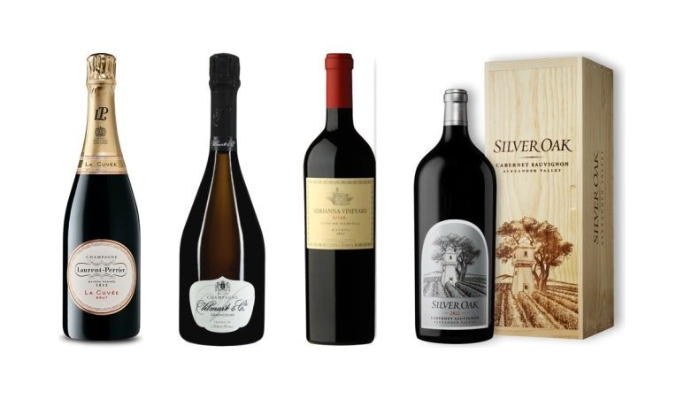
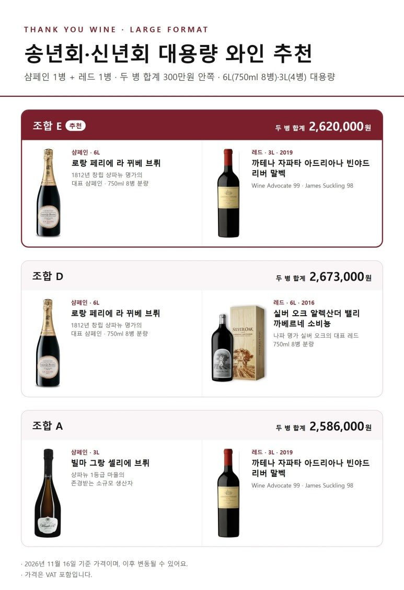
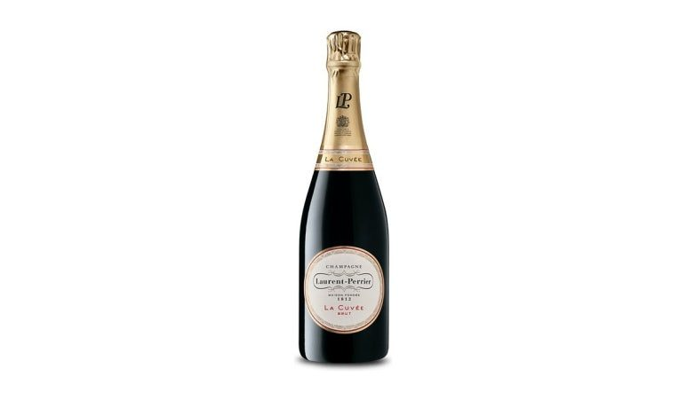
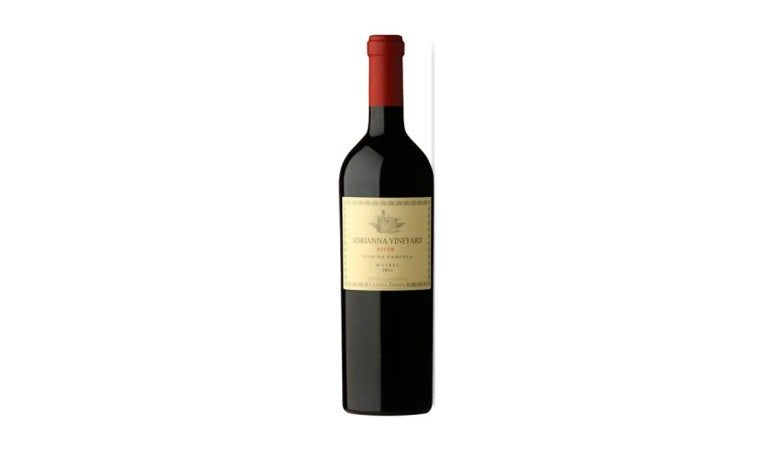
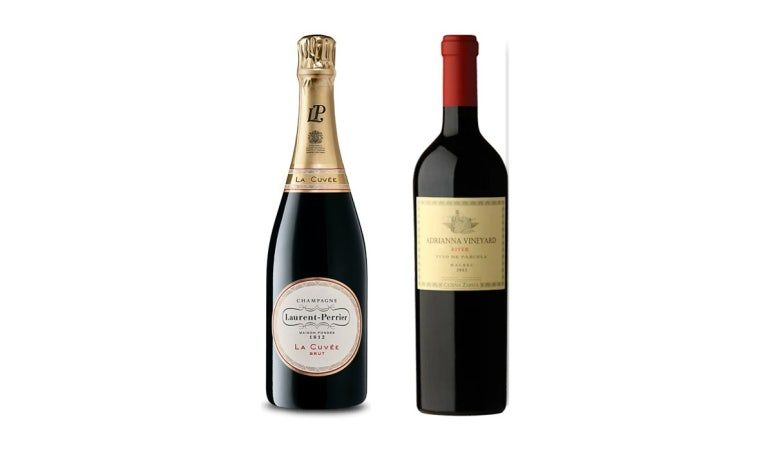
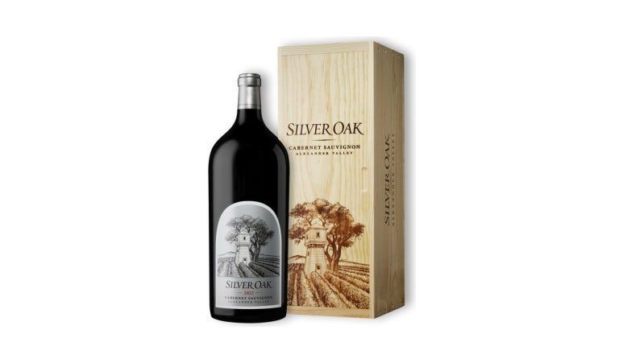
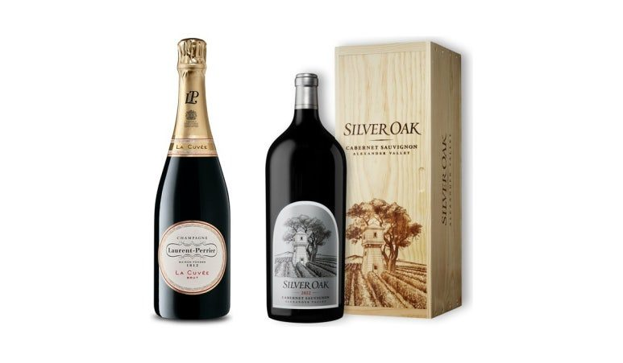
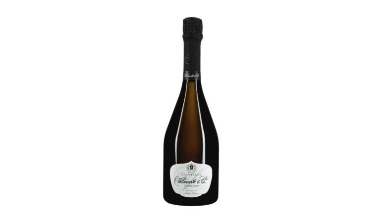
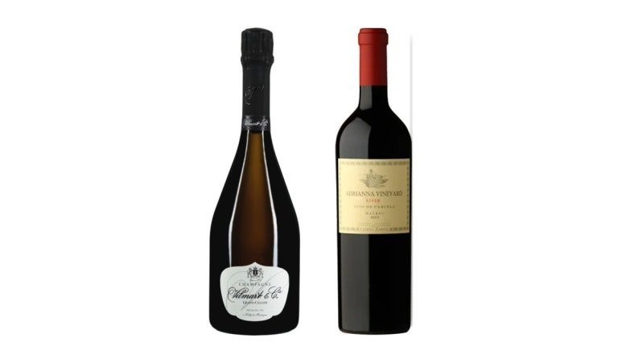

송년회 신년회 대용량 와인 추천
샴페인과 레드 3L·6L 조합 세 가지
연말이 다가오면서 송년회, 신년회 와인 문의가 부쩍 늘었어요. 그중 요즘 가장 재미있게 준비하고 있는 건 "큰 병" 문의예요. 열 명 넘게 모이는 자리에서 750ml 병을 여러 개 따는 대신, 3리터나 6리터짜리 한 병을 테이블 가운데 올려 두면 그 자체로 분위기가 확 달라지거든요.
연말이 다가오면서 송년회, 신년회 와인 문의가 부쩍 늘었어요. 그중 요즘 가장 재미있게 준비하고 있는 건 "큰 병" 문의예요. 열 명 넘게 모이는 자리에서 750ml 병을 여러 개 따는 대신, 3리터나 6리터짜리 한 병을 테이블 가운데 올려 두면 그 자체로 분위기가 확 달라지거든요.
이번 글에서는 실제로 한 와인 모임에서 받은 문의를 바탕으로, 예산 안에서 샴페인 한 병과 레드 한 병을 대용량으로 고른 조합을 정리해 봤어요. 송년회나 신년회를 준비하시는 분들께 참고가 되면 좋겠어요. 같은 예산이라도 750ml 여러 병을 고르는 것과 큰 병 두 개를 고르는 건 모임의 장면 자체가 달라져요. 어떤 기준으로 골랐는지도 함께 적어 둘게요.


대용량 와인, 이름부터 알아볼까요
와인 병은 용량에 따라 부르는 이름이 따로 있어요.
1.5L = 매그넘 (750ml 2병 분량)
3L = 더블 매그넘, 샴페인은 제로보암 (750ml 4병 분량)
6L = 임페리얼, 샴페인은 마투살렘 (750ml 8병 분량)
매그넘은 비교적 쉽게 구할 수 있지만, 3리터부터는 이야기가 달라져요. 수입사에서도 대용량은 몇 병씩만 들여오는 경우가 많아서, 재고가 1병에서 10병 사이인 와인이 대부분이에요. 그래서 대용량 와인은 행사 날짜가 정해지면 최대한 빨리 확보해 두는 게 좋아요.
또 하나 재미있는 점은, 큰 병일수록 와인이 천천히 숙성된다는 거예요. 병 안의 와인 양에 비해 닿는 공기가 적어서 같은 빈티지라도 더 부드럽고 균형 있게 익는다고들 해요. 보기에도 좋고, 맛에도 이유가 있는 셈이죠.
이번 문의는 이랬어요
와인을 공부하는 분들이 모이는 모임에서 신년회용 와인을 찾고 계셨어요. 조건은 세 가지였어요.
샴페인 1병 + 레드 1병
사이즈는 클수록 좋음
와인을 잘 아시는 분들이 모이는 자리라, 이름값만 있는 와인보다는 와인 좋아하는 분들이 반가워할 생산자로 고르려고 했어요. 그리고 건배는 샴페인으로, 식사와 대화는 레드로 이어지도록 두 병의 성격이 겹치지 않게 맞췄어요.
여러 수입사에 3리터, 6리터 재고를 하나하나 확인해서 추린 조합이 아래 세 가지예요.

추천 조합 1: 로랑 페리에 6L + 까테나 아드리아나 리버 3L
가장 추천드리는 조합이에요.
로랑 페리에 라 뀌베 브뤼 6L (마투살렘)
샤르도네 비중이 높아 산뜻하고 깔끔한 기포가 특징인 샴페인이에요. 6리터 병은 보통 병보다 훨씬 커서, 건배하는 순간 모두의 시선이 모여요. 750ml로 치면 8병 분량이라 열 명 넘는 모임에서도 넉넉하게 나눌 수 있어요.

까테나 자파타 아드리아나 빈야드 리버 말벡 2019 3L
아르헨티나 최고의 말벡 명가로 꼽히는 까테나 자파타의 싱글 빈야드 와인이에요. 해발 1,400미터가 넘는 아드리아나 포도밭 중에서도 강바닥 자갈이 깔린 구획에서 나온 포도로 만들어요. Wine Advocate 99점, James Suckling 98점을 받은 와인이라, 와인을 아는 분들이라면 라벨만 보고도 반가워하실 거예요.


추천 조합 2: 로랑 페리에 6L + 실버 오크 알렉산더 밸리 6L
"클수록 좋다"는 조건에 가장 충실한 조합이에요. 두 병 모두 6리터라, 테이블에 올려 두는 것만으로도 행사의 주인공이 돼요.
로랑 페리에 라 뀌베 브뤼 6L (마투살렘)
위 조합과 같은 샴페인이에요.
실버 오크 알렉산더 밸리 까베르네 소비뇽 2016 6L (임페리얼)
미국 오크통 숙성의 대명사로 불리는 캘리포니아 와이너리예요. 부드러운 과실 향에 바닐라, 코코넛 같은 오크 풍미가 어우러져서, 와인을 막 알아가는 분부터 오래 즐겨 온 분까지 두루 좋아하는 스타일이에요. 2016 빈티지라 이미 적당히 숙성이 진행되어 마시기 좋은 시기예요.


추천 조합 3: 빌마 그랑 셀리에 3L + 까테나 아드리아나 리버 3L
샴페인에 좀 더 개성을 주고 싶다면 이 조합이에요.
빌마 그랑 셀리에 브뤼 3L (제로보암)
샹파뉴 몽타뉴 드 랭스의 1등급 마을 릴리 라 몽타뉴에 있는 소규모 생산자예요. 큰 샴페인 하우스처럼 대량으로 만들지 않고, 오크통을 활용해 섬세하고 우아한 스타일을 만드는 곳으로 와인 애호가들 사이에서 존경받는 이름이에요. 국내에서 3리터를 만나기는 쉽지 않은 샴페인이에요.

까테나 자파타 아드리아나 빈야드 리버 말벡 2019 3L
첫 번째 조합과 같은 레드예요.

예산이 조금 남는다면
큰 병은 행사 중반에 열고, 처음 건배는 매그넘으로 가볍게 시작하면 흐름이 자연스러워요. 추가 와인도 모임 성격에 맞춰 함께 골라 드려요.
대용량 와인, 이것만은 챙기세요
미리 칠링하기
6리터 샴페인은 일반 냉장고에 들어가지 않아요. 큰 아이스 버킷이나 아이스박스에 얼음과 물을 함께 채워서 최소 2~3시간 전부터 차갑게 해 두세요.
따르는 사람 정하기
6리터 병은 와인을 채우면 무게가 10킬로그램 가까이 돼요. 한 사람이 두 손으로 병 아래를 받치고 천천히 따르는 게 안전해요.
레드는 일찍 열기
3리터, 6리터 레드는 병 안에서 천천히 깨어나요. 마시기 1시간쯤 전에 열어 두면 향이 훨씬 풍부하게 올라와요.
사진 찍을 시간 남겨 두기
큰 병은 그 자체로 기념사진이 돼요. 따기 전에 단체 사진 한 장 꼭 남기세요.
자주 받는 질문
큰 병 하나와 작은 병 여러 개, 맛이 다른가요?
같은 와인이라도 큰 병은 숙성이 천천히 진행돼서, 같은 빈티지라면 조금 더 젊고 생기 있는 느낌이 오래 유지되는 편이에요. 무엇보다 한 병을 다 같이 나눠 마시기 때문에, 모두가 같은 와인을 같은 순간에 경험한다는 점이 모임 와인으로 가장 큰 매력이에요.
남으면 어떻게 하나요?
샴페인은 전용 스토퍼로 막아 차갑게 두면 다음 날까지 기포가 어느 정도 살아 있어요. 레드는 마개를 다시 끼워 서늘한 곳에 두고 이틀 안에 드시면 돼요. 6리터를 열 명이 나누면 한 사람당 600ml 정도라, 보통은 남기 전에 비워져요.
몇 명이면 어떤 사이즈가 좋을까요?
한 사람이 두세 잔 정도 마신다고 보면 3리터는 8~10명, 6리터는 15~20명 모임에 잘 맞아요. 샴페인과 레드를 함께 준비하면 두 병 합쳐 더 많은 인원도 충분해요.
가격 안내
위에 적은 두 병 합계 가격은 2026년 11월 16일 기준 가격이에요. 대용량 와인은 수입사 재고와 공급 가격에 따라 이후 가격이 변동될 수 있어요. 재고도 와인마다 몇 병씩만 남아 있어서, 주문 순서대로 확보해 드리고 있어요.
송년회, 신년회, 회사 행사처럼 여럿이 모이는 자리에 대용량 와인을 고민하고 계시다면 편하게 문의해 주세요. 인원과 예산, 모임 분위기에 맞춰 땡큐와인이 함께 골라 드릴게요.
이 글은 땡큐와인 네이버 블로그에 먼저 올린 글이에요.